Font Types
I have selected my favorite fonts from each of the following categories: serif, sans serif, script, decorative,
and monotype. I plan on explaining why I chose each one, and providing links to where those fonts can be downloaded
on the web. Naturally, I used Google Fonts to research this article. You can download all of these fonts there, at
Google Fonts. Let’s begin.
Serif - Cherry Wash
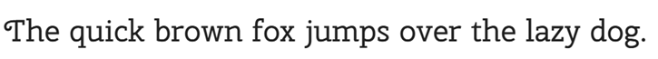
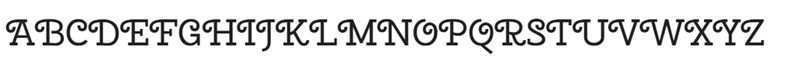
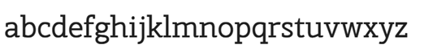
I selected this font because it’s a bit of a hybrid. The embellished capital letters almost make it a decorative font, but fortunately the lowercase letters are quite clear and easy to read, taking it out of the decorative category. Although it’s a serif font, meaning it has “feet” at the bottom of its stems, it has a minimalist feel to it. I also find the weight of the font to be pleasing. By that I mean, it is not too light or too bold.
Sans Serif - Sour Gummy
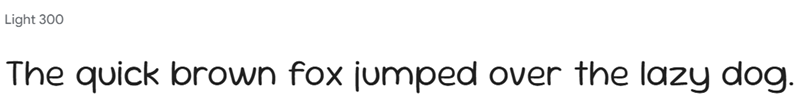
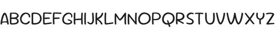
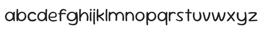
This font has a casual feel to it, and might be a good replacement for the dreaded comic sans. It comes in many different weights, much to my surprise. The weight shown here is “Light 300.” The width of each letter feels very balanced, and I like how the stems of the lowercase “q” and “j” don't curve at all. This font has just enough pizazz without feeling too gimmicky.
Script - Sofia
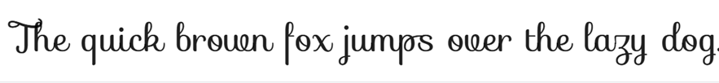
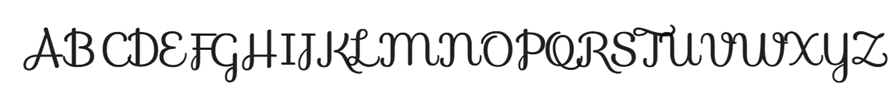
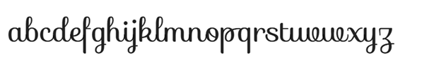
This is my favorite script font. I find that the straight up-and-down tilt of the letters is easier to read than those script fonts with a slant. Once again, the weight of the font is important to me. I feel that this font is neither too light nor too dark. I find it interesting that the dots over the lowercase I and the j are not at the same height. I’m not sure why they did that, but it still looks acceptable to my eyes.
Decorative - Barriecito
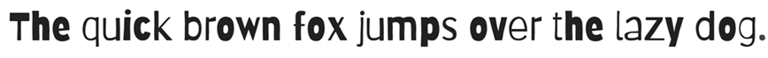
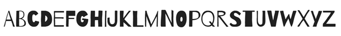
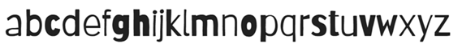
This font almost the feel of a ransom note, or wood-blocking. The variety of weights appeals to me. This would be a delightful font to use in a logo, or maybe headings of a website with a casual, eclectic feel. I am especially in love with the capital “T,” so it’s fortunate that that is a commonly used letter!
Monotype - Ubuntu Mono
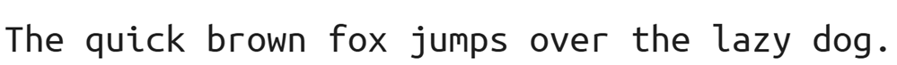
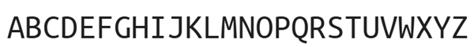
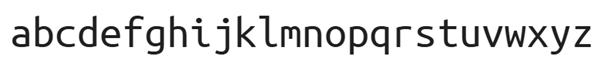
This feels very modern and crisp. The upper and lowercase “m’s” are a real treat.